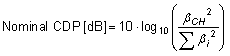
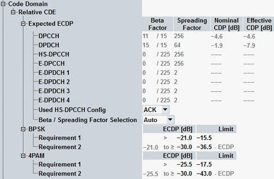

According to the conformance requirements, the relative code domain error (RCDE) has to be measured for several UL signal configurations. The RCDE is affected by the beta values and spreading factors (SF) of the configured UL channels. The effective code domain power (ECDP) is defined to capture both effects into one parameter. The ECDP of a channel is calculated from the nominal CDP and the SF of the channel as follows:
(ECDP/dB) = Nominal CDP + 10*log(SF/256)
The nominal CDP of a channel is calculated from the beta factor of the channel (βCH) and the beta factors of all active channels (βi):

Both ECDP and nominal CDP are rounded to one decimal place.
To calculate ECDP and nominal CDP, the configured channels, their beta factors and spreading factors (SF) must be known by the instrument. Use the section "Expected ECDP" of the configuration dialog to specify this information. Activate exactly the channels configured in the UL signal and specify the beta values (the denominators are fix) and spreading factors. The resulting nominal CDP and ECDP values are displayed for information.
For the HS-DPCCH, you can configure three sets of values, depending on whether the HS-DPCCH transports an ACK, NACK or CQI. Use parameter "Used HS-DPCCH Config" to select which of the three sets is displayed and applied for the HS-DPCCH.
- Auto: the required information is delivered by the signaling application and displayed for information. In that case, you need only to select which set of values has to be used for the HS-DPCCH.
- Manual: the configuration is controlled by the WCDMA UE TX measurement application, manual settings possible.
The default values for the channels DPCCH, DPDCH and HS-DPCCH correspond to subtest 1 as specified in 3GPP TS 34.121, table C.10.1.4.
The default values for the enhanced channels correspond to subtest 4 as specified in 3GPP TS 34.121, table C.11.1.3.

The RCDE limits defined in 3GPP TS 34.121 depend on the modulation types of the channels. A single uplink channel is either BPSK or 4PAM modulated. The carrier uses only one branch (I or Q) at a time. The combination of two BPSK or 4PAM modulated channels (one on the I- and one on the Q-branch) results in a constellation diagram resembling a QPSK or 16QAM modulation. These terms are used by 3GPP.
3GPP defines two requirements for each modulation type. The BPSK limits depend on the presence of 4PAM modulated channels in the signal. All limits are described below.
Individual values can be set per carrier in a dual uplink carrier configuration.
- 5.13.2A "Relative Code Domain Error with HS-DPCCH"
- 5.13.2B "Relative Code Domain Error with HS-DPCCH and E-DCH"
- Nominal CDP ≥ -20 dB
- ECDP ≥ -30 dB
These conditions are not checked automatically. Please enable/disable the limit checks of the individual channels manually, according to the displayed nominal CDP and ECDP values.
The applicable limits are listed in the following table.
ECDP | RCDE limit |
|---|---|
ECDP > -21 dB | ≤ -15.5 dB |
-21 dB ≥ ECDP ≥ -30 dB | ≤ -36.5 dB - ECDP |
These limits are configured as default values in the configuration dialog.
- 5.13.2C "Relative Code Domain Error for HS-DPCCH and E-DCH with 16QAM"
- Nominal CDP ≥ -30 dB
- ECDP ≥ -30 dB
These conditions are not checked automatically. Please enable/disable the limit checks of the individual channels manually, according to the displayed nominal CDP and ECDP values.
The applicable limits differ for BPSK and 4PAM modulated channels and are listed in the following tables.
ECDP | RCDE limit |
|---|---|
ECDP > -22 dB | ≤ -17.5 dB |
-22 dB ≥ ECDP ≥ -30 dB | ≤ -39.5 dB - ECDP |
ECDP | RCDE limit |
|---|---|
ECDP > -25.5 dB | ≤ -17.5 dB |
-25.5 dB ≥ ECDP ≥ -30 dB | ≤ -43 dB - ECDP |
The 4PAM limits are configured as default values in the configuration dialog. Adjust the BPSK limits if 4PAM channels are present.